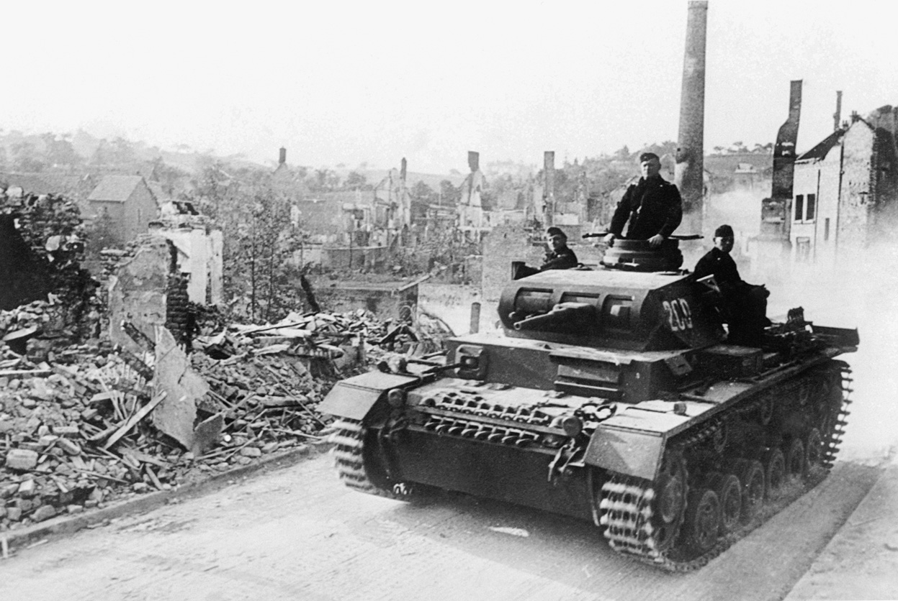
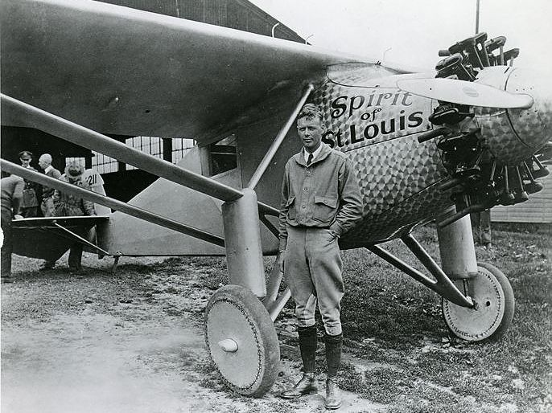
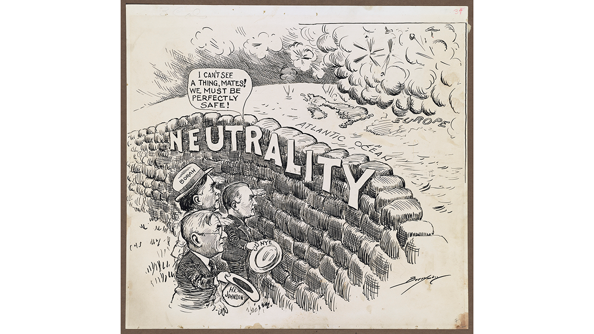
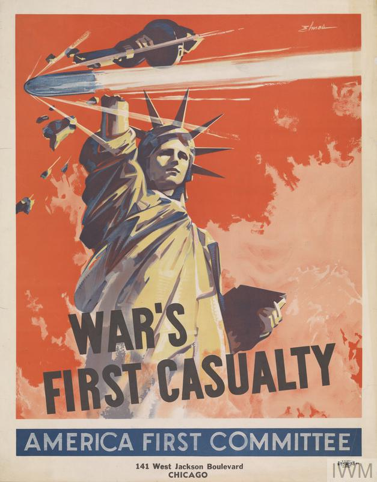
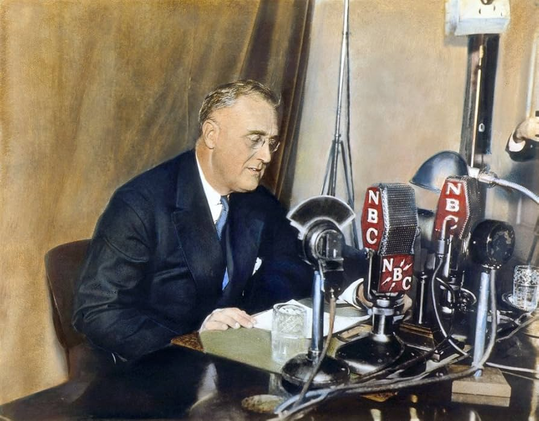
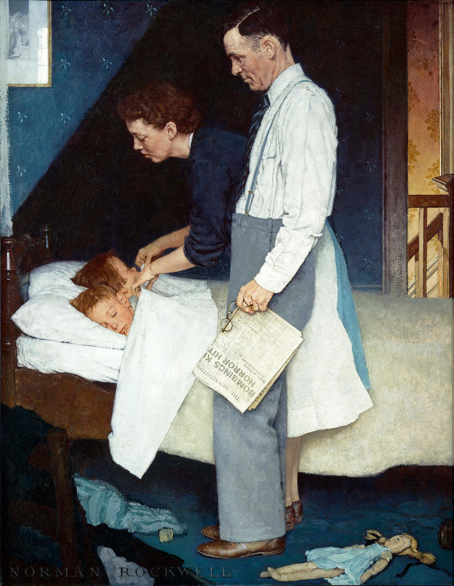
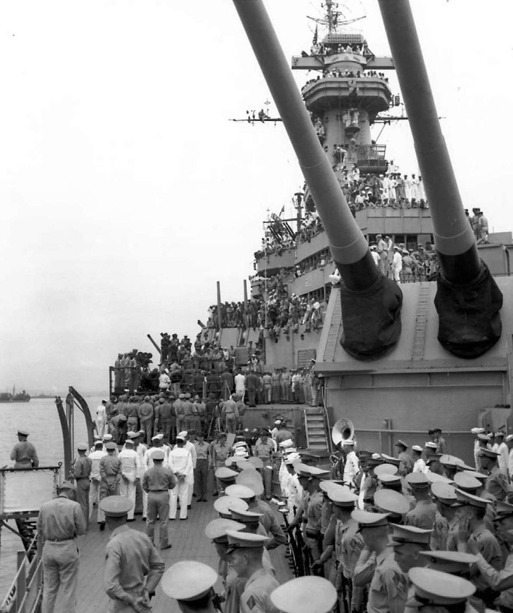
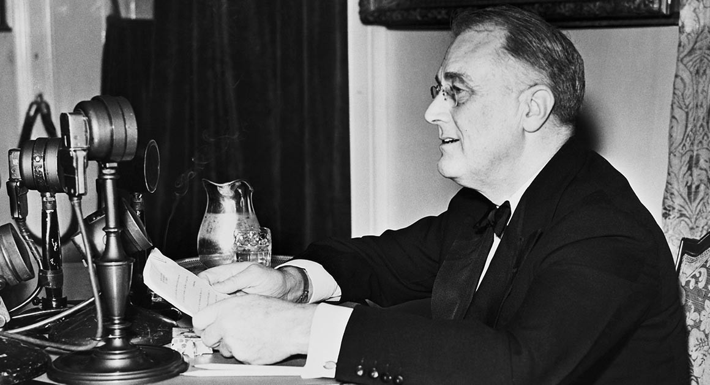
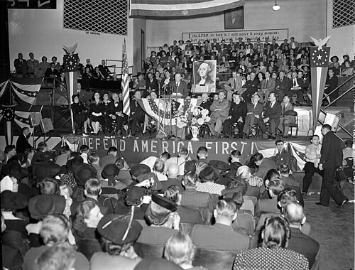

U.S. HISTORY • SEMESTER 1 • LESSON 09 • STANDARD 11.7
THE ROAD TO WAR
ESSENTIAL QUESTION
Why did Americans disagree so fiercely about whether to fight in World War II before the United States ever entered the war?
AMERICA'S ROAD TO WAR • 1935 TO 1941
1935
Congress passes the first Neutrality Act, banning arms sales to nations at war.
1937
Japan invades China. FDR warns of a "quarantine" on aggressive nations, but pulls back from confrontation.
1940
Germany conquers France. The America First Committee launches and quickly draws over 800,000 members.
Dec. 1940
FDR delivers his "Arsenal of Democracy" fireside chat, calling on Americans to supply Britain without fighting.
Mar. 1941
Lend-Lease Act passes. The U.S. sends weapons and supplies to Britain, ending any pretense of full neutrality.
On September 11, 1941, Charles Lindbergh stepped up to a microphone in Des Moines, Iowa, and delivered one of the most controversial speeches in American history. Lindbergh was the most famous pilot in the world: the first man to fly solo across the Atlantic Ocean. Fifteen years after that flight, he stood before 8,000 cheering Americans and told them that their country was being pushed toward a war it should never fight.
On September 11, 1941, Charles Lindbergh stood before 8,000 people in Des Moines, Iowa. Lindbergh was the most famous pilot in the world. In 1927, he had become the first person to fly solo across the Atlantic Ocean. Now, fifteen years later, he was at a microphone telling Americans that they should stay out of World War II.
His speech stirred fierce anger across the country. Critics called him a Nazi sympathizer. Supporters called him a patriot. But the argument he was making was not fringe: nearly half of Americans agreed that the United States should stay out of the war in Europe. This was the central political fight of 1940 and 1941, and it was tearing the country apart before a single American soldier had fired a shot.
His speech made many Americans furious. Critics called him a Nazi supporter. But Lindbergh was not alone in his views. Millions of Americans agreed that the United States should stay out of World War II. In 1940 and 1941, this debate was one of the biggest fights in American politics. The country was deeply divided.
PHASE ONE
WORLD ON FIRE

German forces march through Paris, June 1940. France fell to Germany in just six weeks. Source: Wikimedia Commons.
By 1939, the world had changed in ways Americans could not ignore. In Europe, Adolf HitlerThe dictator who led Nazi Germany beginning in 1933 and launched the invasions that started World War II in Europe. had already taken Austria and Czechoslovakia without firing a shot. In September 1939, Germany invaded Poland, and Britain and France declared war. World War II in Europe had begun. Within nine months, Hitler's armies had swept through Norway, Denmark, the Netherlands, Belgium, and finally France itself. One of the most powerful countries in the world had fallen in six weeks.
By 1939, the world was becoming very dangerous. In Europe, Adolf HitlerThe dictator who led Nazi Germany beginning in 1933 and launched the invasions that started World War II in Europe. had taken two countries without a fight. Then Germany invaded Poland. Britain and France declared war. Within nine months, Germany had defeated France. One of the most powerful countries in the world fell in only six weeks.
Across the Pacific, Imperial JapanThe name for Japan's government and military during this era, when Japan was expanding its empire across Asia and the Pacific. had been building an empire since the early 1930s. Japan invaded China in 1937, killing hundreds of thousands of civilians. Japan wanted to control resources across Asia and the Pacific, and American territories like the Philippines stood directly in the way of those ambitions.
In Asia, Imperial JapanThe name for Japan's government and military during this era, when Japan was expanding its empire across Asia and the Pacific. was building a large empire. Japan had invaded China in 1937 and killed hundreds of thousands of people. Japan wanted land and resources across Asia and the Pacific. American territories were in Japan's way.
Americans watched all of this on newsreels, in newspapers, and over radio. They could see the world falling apart. But many asked a hard question: was this America's problem to solve? The United States had entered World War I just two decades earlier, and more than 116,000 American soldiers had died. Many Americans were not eager to repeat that experience.
Americans saw all of this on newsreels and in newspapers. They knew the world was falling apart. But many Americans asked: was it America's problem? The United States had fought in World War I only twenty years earlier. More than 116,000 Americans had died in that war. Many people did not want to go through that again.
DID YOU KNOW

Charles Lindbergh and the Spirit of St. Louis, 1927. Source: Wikimedia Commons.
When Charles Lindbergh landed in Paris in 1927 after his solo Atlantic flight, a crowd of 150,000 people rushed the runway to meet him. He was so famous that he could have been elected president. That fame is exactly what made his anti-war speeches so powerful in 1940 and 1941, and so terrifying to those who disagreed with him.
PHASE TWO
AMERICA FIRST: THE CASE FOR STAYING OUT

Congress in session during the 1930s. Lawmakers passed a series of Neutrality Acts beginning in 1935 to keep the United States out of foreign wars. Source: Library of Congress.
The Neutrality ActsA series of laws passed by Congress between 1935 and 1937 that banned the U.S. from selling weapons or making loans to nations at war. were Congress's answer to the growing tension in Europe. Between 1935 and 1937, lawmakers passed three separate laws restricting what the United States could sell or loan to countries that were fighting. The logic was simple: if America stayed out of other nations' wars entirely, it could not be pulled into them. These laws had wide support because they reflected a genuine fear of repeating World War I.
The Neutrality ActsA series of laws passed by Congress between 1935 and 1937 that banned the U.S. from selling weapons or making loans to nations at war. were Congress's answer to the growing danger in Europe. Between 1935 and 1937, Congress passed three laws. These laws stopped the United States from selling weapons or giving loans to countries at war. If America stayed out of other countries' fights, it could not be dragged into them. Many Americans supported these laws because they were afraid of another World War I.
The America First CommitteeA large organization formed in 1940 that opposed U.S. entry into World War II and pushed for strict neutrality. launched in September 1940 and grew with startling speed. Within months it had more than 800,000 members, making it one of the largest anti-war organizations in American history. The committee attracted ordinary citizens, senators, college students, business leaders, and celebrities. Lindbergh became its most visible spokesperson.
The America First CommitteeA large organization formed in 1940 that opposed U.S. entry into World War II and pushed for strict neutrality. started in September 1940 and grew very fast. In a few months it had more than 800,000 members. It was one of the largest anti-war groups in American history. It included everyday citizens, senators, students, and business leaders. Lindbergh was its most famous voice.
The arguments against entering the war were real and serious. The Atlantic and Pacific oceans were wide. Britain had its own military. Sending American soldiers to die in a European war that many Americans considered none of their business was a genuine political position, not a foolish one. Polls showed that as late as the summer of 1941, over 80 percent of Americans opposed entering the war.
The arguments for staying out were serious. The oceans were wide. Britain had its own military. Many Americans thought Europe's war was not America's problem. This was a real political view, not a crazy one. Polls showed that over 80 percent of Americans still opposed entering the war as late as summer 1941.

An America First Committee political poster, circa 1940. The committee argued that the United States could stay safe without entering World War II. Source: Wikimedia Commons / Library of Congress.
But the America First Committee also had a troubling side. Some of its members held antisemiticHolding prejudice or hostility toward Jewish people. views. Lindbergh's September 1941 speech directly blamed Jewish Americans and the Roosevelt administration for pushing the country toward war. His comments caused an immediate scandal and badly damaged the committee's reputation. By the fall of 1941, the America First argument was politically on the defensive even before any bombs fell.
But the America First movement also had a dark side. Some members held antisemiticHolding prejudice or hostility toward Jewish people. views. Lindbergh's September 1941 speech blamed Jewish Americans for pushing the country into war. This caused a huge scandal. Many Americans turned against the committee after that. By fall 1941, the America First movement was already losing ground.
FAST FACTS
THE SCALE OF AMERICA'S NEUTRALITY DEBATE
800Kmembers of the America First Committee at its peak in 1941, making it one of the largest political organizations in American history at the time
3separate Neutrality Acts passed by Congress between 1935 and 1937, each one trying harder to keep the United States out of any foreign war
80%of Americans who opposed entering World War II as late as summer 1941, just months before the attack on Pearl Harbor changed everything
116KAmerican soldiers who died in World War I, a number that haunted a generation of Americans and fueled the desire to stay out of another war
PHASE THREE
FDR PUSHES BACK: THE INTERVENTIONIST ARGUMENT

President Roosevelt at radio microphones, circa 1940. His fireside chats reached tens of millions of Americans directly in their homes. Source: Library of Congress / Wikimedia Commons.
Franklin Roosevelt disagreed with the isolationists, but he had to be careful. He was running for an unprecedented third term in 1940, and American voters were watching. He promised he would not send American boys into any foreign war. But privately, he believed the United States could not afford to let Britain fall to Hitler. If Germany controlled all of Europe, Roosevelt argued, America would eventually face that threat alone.
Franklin Roosevelt disagreed with the isolationists, but he had to be careful. He was running for a third term in 1940. He publicly promised he would not send American soldiers to fight in Europe. But privately he believed the United States could not let Britain fall. If Germany controlled all of Europe, Roosevelt said, America would eventually face it alone.
On December 29, 1940, Roosevelt sat down at a radio microphone in the White House and spoke directly to the American people. He had delivered fireside chatsInformal radio addresses that Roosevelt gave directly to American families, making complex issues feel personal and approachable. before: personal, conversational radio speeches that reached tens of millions of households. This one was different. He told Americans that the United States must become "the great arsenal of democracy."
On December 29, 1940, Roosevelt went to a radio microphone and spoke directly to Americans. He had given fireside chatsInformal radio addresses that Roosevelt gave directly to American families, making complex issues feel personal and approachable. before. These were friendly radio speeches that millions of families listened to at home. This one was different. He told Americans that the United States had to become "the great arsenal of democracy."
The speech did something politically difficult: it asked Americans to help fight a war without officially joining it. Roosevelt compared the situation to a neighbor whose house was on fire. You don't stand and watch your neighbor's house burn, he said; you lend them your garden hose. You help them put the fire out, and then they return the hose when it's over. That argument became the basis for the Lend-Lease ActA 1941 law that allowed the U.S. to lend weapons and supplies to Allied nations like Britain without technically entering the war..
The speech asked Americans to help fight a war without officially joining it. Roosevelt used a simple comparison. He said if your neighbor's house is on fire, you don't watch it burn. You lend them your garden hose to help put the fire out. You get the hose back when it's over. That idea became the Lend-Lease ActA 1941 law that allowed the U.S. to lend weapons and supplies to Allied nations like Britain without technically entering the war..
The Lend-Lease Act passed Congress in March 1941. It allowed the United States to send weapons, food, and equipment to Britain and other Allied nations. America would not be fighting, but it would be supplying one side of the war. Isolationists were furious: they argued that Lend-Lease made genuine neutrality impossible. They were right. The United States was now far closer to the war than it had been just six months earlier.
Lend-Lease passed in March 1941. It let the United States send weapons, food, and supplies to Britain and its allies. America was not fighting yet, but it was helping one side. Isolationists were angry. They said Lend-Lease made true neutrality impossible. And they were right. The United States was now much closer to war than it had been.
ART SPOTLIGHT

"Freedom from Fear" — Norman Rockwell, 1943.
Rockwell painted this image for the Saturday Evening Post as part of a four-painting series inspired by Roosevelt's 1941 State of the Union speech listing the freedoms worth protecting.
Rockwell's Four Freedoms paintings were so powerful that the U.S. Treasury used them in a war bond tour across the country, raising over 132 million dollars. The parents tucking a child into bed while the father holds a newspaper with war headlines is not just sentimental: it captures exactly the fear that drove the entire debate between isolationists and interventionists.
PHASE FOUR
ON THE BRINK: AMERICA IN THE FALL OF 1941

A U.S. Navy destroyer in the Atlantic, 1941. American ships were already escorting supply convoys toward Britain, putting them in range of German submarines. Source: Wikimedia Commons / U.S. Navy.
By the fall of 1941, the United States was unofficially at war in everything but name. American destroyers were escorting supply ships across the Atlantic, bringing weapons and food to Britain. German submarines were attacking those convoys. In September, a German submarine fired torpedoes at the USS Greer, an American destroyer. Roosevelt ordered the Navy to shoot on sight at any German or Italian vessel in American defensive waters.
By fall 1941, the United States was almost at war without officially declaring it. American warships were escorting supply ships to Britain. German submarines attacked those convoys. In September 1941, a German submarine fired at the USS Greer, an American warship. Roosevelt ordered the Navy to shoot first at any German or Italian ship in American defensive waters.
Meanwhile, tension with Japan had reached a breaking point. Japan had joined Germany and Italy in the Axis powersThe military alliance formed by Germany, Italy, and Japan during World War II. in September 1940. Japan's expansion in Asia threatened American military bases in the Philippines and the Pacific. The Roosevelt administration placed a full oil embargoA government order that stops trade with another country, used as a political pressure tool. on Japan in July 1941, cutting off 80 percent of Japan's oil supply. Japan faced a choice: give up its empire or find another way to get the resources it needed.
Tension with Japan was also rising fast. Japan had joined Germany and Italy to form the Axis powersThe military alliance formed by Germany, Italy, and Japan during World War II. in 1940. Japan wanted to expand across Asia and the Pacific. The United States placed an oil embargoA government order that stops trade with another country, used as a political pressure tool. on Japan in July 1941. This cut off 80 percent of Japan's oil. Japan had to decide: give up its empire, or find another way.
The country was split into two camps, and almost everyone had a side. Families argued at dinner tables. Newspapers printed dueling editorials. College campuses held heated debates. The question was not whether war existed in the world: it clearly did, on a terrifying scale. The question was whether it was America's war to fight, and whether American lives should be sacrificed to stop something happening thousands of miles away.
The country was divided into two sides. Families argued at home. Newspapers ran debates. College students held rallies for and against entering the war. Everyone knew war existed. The question was whether it was America's war. Should American lives be risked to stop something happening so far away?
The debate that Charles Lindbergh and Franklin Roosevelt were having was not really about strategy. It was about what kind of country the United States wanted to be: a country that stayed safe behind its oceans, or a country that believed its security was tied to what happened everywhere else in the world. Americans had never fully agreed on an answer. They still haven't.
The debate between Lindbergh and Roosevelt was not really about military plans. It was about what kind of country America wanted to be. Should America stay safe behind its oceans? Or did American safety depend on what happened in the rest of the world? Americans had never fully agreed on that question. In many ways, they still haven't.

President Roosevelt at radio microphones, December 1940. Source: Library of Congress / Wikimedia Commons.
PRIMARY SOURCE MOMENT
"We must be the great arsenal of democracy. For us this is an emergency as serious as war itself. We must apply ourselves to our task with the same resolution, the same sense of urgency, the same spirit of patriotism and sacrifice as we would show were we at war."
— Franklin D. Roosevelt, Fireside Chat radio address, December 29, 1940
WHY THIS MATTERS: Roosevelt is not asking Americans to go to war. He is asking them to treat the emergency as if they were at war. He is trying to move the country away from full neutrality without officially taking a side. The phrase "arsenal of democracy" became one of the most remembered lines of his presidency. It directly challenged the isolationist argument that America could safely ignore what was happening in Europe.
THEN AND NOW
EVERY GENERATION OF AMERICANS EVENTUALLY DEBATES THE SAME QUESTION: WHEN IS IT OUR WAR TO FIGHT?
1941

America First Committee demonstrators, circa 1941. Hundreds of thousands of Americans marched and rallied to keep the United States out of World War II. Source: Wikimedia Commons / Library of Congress.
NOW
Congress in session, present day. American lawmakers still debate when and how the United States should use military power abroad. Source: Wikimedia Commons / CC license.
THEN
In 1940 and 1941, Americans were locked in one of the most intense foreign policy debates in U.S. history. The America First Committee drew hundreds of thousands of members who believed the United States should protect itself behind its oceans and let Europe solve Europe's problems. Against them stood interventionists who believed that Hitler's victory in Europe would eventually threaten American security directly.
NOW
That debate did not end in 1941. Every generation of Americans has faced a version of the same question: when is it the United States' responsibility to intervene in conflicts beyond its borders? The debates around Korea, Vietnam, Iraq, and Afghanistan all echoed the same core disagreement that Lindbergh and Roosevelt had in 1941. Congress still votes on military authorizations, and Americans still disagree sharply about when intervention is worth the cost.
CONNECTION
The isolationism of 1940 and 1941 did not disappear when Pearl Harbor ended the debate. It went underground and came back in every major foreign policy argument that followed. The people on both sides of that 1941 debate were asking a question the United States Constitution never fully answered: who decides when America goes to war, and for what reasons? That question is still live today.
When, if ever, do you think a country has a responsibility to intervene in a conflict that has not directly attacked it?